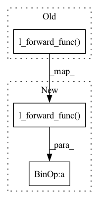

Pattern ID :22303
Before Change
bin_weight = min(((step - self.bin_start_steps) / self.bin_warmup_steps) / 2, 0.5)
if self.include_forward_loss:
l_forward = self.l_forward_func( torch.log(soft_attention), in_lens, out_lens)
// this is not the proper way to get log_probs, but the forward attention complicates things.
// Luckily the forward attention does about the same as CTC, so it"s not too necessary to have this.
else:
l_forward = 0.0After Change
forward_weight = min(((step - self.forward_start_steps) / self.bin_warmup_steps) / 10, 0.1)
if self.include_forward_loss and self.forward_start_steps < step:
l_forward = forward_weight * self.l_forward_func( torch.log(soft_attention), in_lens, out_lens)
else:
l_forward = 0.0
if self.bin_start_steps < step:In pattern: SUPERPATTERN
Frequency: 3
Non-data size: 3
Instances Fragment ID: 70272105
Project Name: digitalphonetics/ims-toucan
Commit Name: eb3c68c49612b33edd8dea08d67a6141ecd8fc49
Time: 2021-09-29
Author: florian.lux@ims.uni-stuttgart.de
File Name: TrainingInterfaces/Text_to_Spectrogram/Tacotron2/AlignmentLoss.py
M Class Name: AlignmentLoss
N Class Name: AlignmentLoss
M Method Name: forward(5)
N Method Name: forward(5)
M Parent Class: nn.Module
N Parent Class: nn.Module
M File Name: TrainingInterfaces/Text_to_Spectrogram/Tacotron2/AlignmentLoss.py
N File Name: TrainingInterfaces/Text_to_Spectrogram/Tacotron2/AlignmentLoss.py
M Start Line: 161
M End Line: 162
N Start Line: 199
N End Line: 202
Before Change
forward_weight = min(((step - self.forward_start_steps) / self.forward_start_steps) / 10, 0.01)
if self.include_forward_loss and self.forward_start_steps < step:
l_forward = forward_weight * self.l_forward_func( torch.log(soft_attention), in_lens, out_lens)
else:
l_forward = 0.0
if self.bin_start_steps < step:After Change
forward_weight = min(((step - self.forward_start_steps) / self.forward_start_steps) / 10, 0.01)
if self.include_forward_loss and self.forward_start_steps < step:
l_forward = forward_weight * self.l_forward_func(torch.log(soft_attention), in_lens, out_lens) * 50
else:
l_forward = 0.0
Fragment ID: 70272107
Project Name: digitalphonetics/ims-toucan
Commit Name: 688a80e651234090b5107e02fe770e63c85367dd
Time: 2021-10-12
Author: florian.lux@ims.uni-stuttgart.de
File Name: TrainingInterfaces/Text_to_Spectrogram/Tacotron2/AlignmentLoss.py
M Class Name: AlignmentLoss
N Class Name: AlignmentLoss
M Method Name: forward(5)
N Method Name: forward(5)
M Parent Class: nn.Module
N Parent Class: nn.Module
M File Name: TrainingInterfaces/Text_to_Spectrogram/Tacotron2/AlignmentLoss.py
N File Name: TrainingInterfaces/Text_to_Spectrogram/Tacotron2/AlignmentLoss.py
M Start Line: 191
M End Line: 194
N Start Line: 191
N End Line: 194
Before Change
bin_weight = min(((step - self.bin_start_steps) / self.bin_warmup_steps) / 100, 0.01)
if self.include_forward_loss and self.forward_start_steps < step:
l_forward = self.l_forward_func( torch.log(soft_attention), in_lens, out_lens)
else:
l_forward = 0.0
if self.bin_start_steps < step:After Change
bin_weight = min(((step - self.bin_start_steps) / self.bin_warmup_steps) / 100, 0.01)
if self.include_forward_loss and self.forward_start_steps < step:
l_forward = self.l_forward_func( torch.log(soft_attention), in_lens, out_lens) * self.forward_loss_weight
else:
l_forward = 0.0
Fragment ID: 70272109
Project Name: digitalphonetics/ims-toucan
Commit Name: e0b827c22f4c9478846e5f22ebfa59e28321acb2
Time: 2021-10-16
Author: florian.lux@ims.uni-stuttgart.de
File Name: TrainingInterfaces/Text_to_Spectrogram/Tacotron2/AlignmentLoss.py
M Class Name: AlignmentLoss
N Class Name: AlignmentLoss
M Method Name: forward(5)
N Method Name: forward(5)
M Parent Class: nn.Module
N Parent Class: nn.Module
M File Name: TrainingInterfaces/Text_to_Spectrogram/Tacotron2/AlignmentLoss.py
N File Name: TrainingInterfaces/Text_to_Spectrogram/Tacotron2/AlignmentLoss.py
M Start Line: 193
M End Line: 193
N Start Line: 195
N End Line: 195